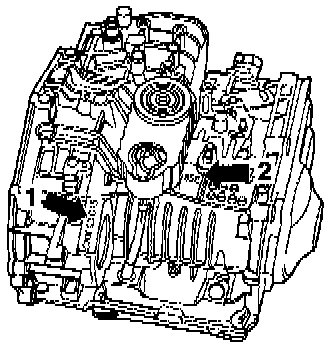

Identification of Transmission
IDENTIFICATION OF TRANSMISSIONThe "01M" 4-speed automatic transmission is installed in the Golf III, Jetta III and Cabrio, beginning in the 1995 model year, in combination with either a 4-cylinder or 6-cylinder engine.
LOCATION OF I.D. DATA ON TRANSMISSION CASE

^ Code Letters and Manufacture Date (arrow 1).
^ Transmission Type Data (arrow 2).
CLOSE-UP VIEWS

^ Transmission Type Data (arrow 2).

^ Code Letters and Manufacture Date (arrow 1).
EXAMPLE:
CKX 03 01 5
I I I I I
I I I I I
Code letters Day Month Year (1995)
of manufacture
^ The code letters of the transmission are also listed on the vehicle data plates.